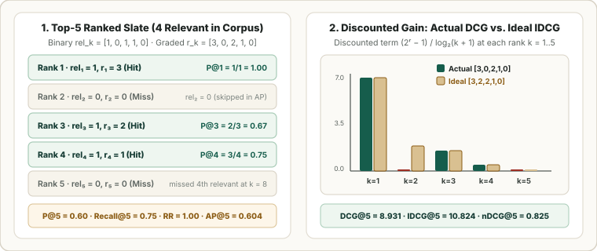

Search, Retrieval & Recommendation Ranking Metrics: Precision@K, MRR, MAP@K, and nDCG@K
A search engine or recommender system shows the user an ordered list of $K$ results (ranks $k = 1, 2, \dots, K$). Because users mostly click results near the top of the page, ranking metrics measure two things: how many relevant items appear in the top $K$, and how close to rank $1$ they are placed.

1. What Is $\text{rel}_k$? Precision@$K$ and Recall@$K$
At each rank position $k \in \{1, 2, \dots, K\}$, we label the result with a relevance score $\text{rel}_k$. For binary metrics (hit vs. miss), $\text{rel}_k$ is simply $1$ or $0$:
Summing $\text{rel}_k$ from $k = 1$ to $K$ counts how many relevant items landed inside the top $K$. If $R$ is the total number of relevant items that exist in the entire catalog for this query:
Hit Rate@$K$ is even simpler: it equals $1$ if at least one relevant item appears anywhere in the top $K$, and $0$ otherwise. Note that Precision@$K$, Recall@$K$, and Hit Rate@$K$ ignore rank order inside the top $K$: a hit at rank $k = 1$ gets the exact same credit as a hit at rank $k = K$.
2. Rewarding Top Positions: MRR and MAP@$K$
To reward models that push relevant items to the very top of the list, we weight hits by their rank position $k$:
- Reciprocal Rank ($\operatorname{RR}$) and $\operatorname{MRR}$: When the user only needs one good answer (like finding a login page), let $k_{\text{first}}$ be the rank of the first relevant result:
$$\operatorname{RR} = \frac{1}{k_{\text{first}}}, \qquad \operatorname{MRR} = \frac{1}{Q}\sum_{q=1}^{Q} \operatorname{RR}_q.$$If the first hit is at rank $1$, $\operatorname{RR} = 1/1 = 1.0$; if it drops to rank $4$, $\operatorname{RR} = 1/4 = 0.25$. Averaging $\operatorname{RR}$ across $Q$ queries gives Mean Reciprocal Rank ($\operatorname{MRR}$).
- Average Precision ($\operatorname{AP@}K$) and $\operatorname{MAP@}K$: When the user wants multiple relevant items, we compute $\operatorname{Precision@}k$ at every rank where a hit occurs ($\text{rel}_k = 1$) and average over the total possible hits $\min(K, R)$:
$$\operatorname{AP@}K = \frac{1}{\min(K, R)} \sum_{k=1}^{K} \operatorname{Precision@}k \cdot \text{rel}_k, \qquad \operatorname{MAP@}K = \frac{1}{Q}\sum_{q=1}^{Q} \operatorname{AP@}K_q.$$Because $\text{rel}_k = 0$ on misses, non-relevant ranks add zero to the sum, but they push subsequent hits to larger denominators $k$, lowering their $\operatorname{Precision@}k$.
3. Graded Relevance: DCG@$K$, Ideal DCG (IDCG@$K$), and nDCG@$K$
In many search and recommendation tasks, some results are much better than others. Instead of binary $0/1$, we assign a multi-level relevance grade $\text{rel}_k \in \{0, 1, 2, 3\}$ at rank $k$ (for example: $0 = \text{irrelevant}$, $1 = \text{somewhat relevant}$, $2 = \text{relevant}$, $3 = \text{exact match}$).
- Discounted Cumulative Gain ($\operatorname{DCG@}K$): Gives each item returned by the model at rank $k$ an exponential numerator gain of $2^{\text{rel}_k} - 1$ (so grade $3 \to 7$, grade $2 \to 3$, grade $1 \to 1$, grade $0 \to 0$) and divides by a logarithmic discount $\log_2(k + 1)$ ($1.0$ at rank $1$, $1.585$ at rank $2$, $2.0$ at rank $3$, etc.) to penalize putting good items far down the page:
$$\operatorname{DCG@}K = \sum_{k=1}^{K} \frac{2^{\text{rel}_k} - 1}{\log_2(k + 1)}.$$
- Ideal DCG ($\operatorname{IDCG@}K$) — The Oracle Ceiling for Query $q$: Suppose a perfect oracle ranker looked at the entire catalog (or judgment pool) for this query, picked the best $K$ items that exist anywhere in the catalog, and sorted their grades in descending order:
$$\text{rel}_1^* \ge \text{rel}_2^* \ge \dots \ge \text{rel}_K^*.$$
The $\operatorname{DCG@}K$ of that best-possible oracle ordering is the Ideal DCG ($\operatorname{IDCG@}K$):
$$\operatorname{IDCG@}K = \sum_{k=1}^{K} \frac{2^{\text{rel}_k^*} - 1}{\log_2(k + 1)}.$$
- Normalized DCG ($\operatorname{nDCG@}K$): Dividing the model’s actual $\operatorname{DCG@}K$ by the query’s oracle ceiling $\operatorname{IDCG@}K$ rescales every query onto $[0, 1]$:
$$\operatorname{nDCG@}K = \frac{\operatorname{DCG@}K}{\operatorname{IDCG@}K} \in [0, 1].$$
Why do we need $\operatorname{IDCG@}K$? (And the #1 mistake to avoid)
- Why raw $\operatorname{DCG@}K$ cannot be compared or averaged across queries: Different queries have vastly different numbers of relevant items in the catalog. Compare two queries at $K = 3$:
- Query A (Specific query — only one grade-$1$ item exists in the catalog): A perfect model places that item at rank $1$, producing $\text{rel}_{1:3} = [1, 0, 0]$ and raw $\operatorname{DCG@3} = \frac{2^1-1}{\log_2 2} = \mathbf{1.0}$.
- Query B (Broad query — three grade-$3$ items exist in the catalog): A mediocre model misses two of them and buries the third at rank $3$, producing $\text{rel}_{1:3} = [0, 0, 3]$ and raw $\operatorname{DCG@3} = \frac{2^3-1}{\log_2 4} = \frac{7}{2} = \mathbf{3.5}$.
- Crucial rule — $\operatorname{IDCG@}K$ sorts the entire catalog’s relevant items, NOT just the $K$ items your model returned: If the catalog contains grades $\{3, 2, 2, 1\}$ but your model only retrieves a single grade-$1$ item at rank $1$ ($\text{rel}_{1:5} = [1, 0, 0, 0, 0]$), you must not compute $\operatorname{IDCG@5}$ by sorting $[1, 0, 0, 0, 0]$ (which would give $\operatorname{IDCG@5} = \operatorname{DCG@5} = 1.0 \implies \operatorname{nDCG@5} = 1.0$, falsely rewarding a model that missed every grade-$3$ and grade-$2$ document!). Instead, $\operatorname{IDCG@5}$ sorts the catalog’s true relevant pool $\text{rel}_{1:5}^* = [3, 2, 2, 1, 0]$, penalizing both unretrieved relevant items and bad rank ordering.
- Boundary cases for $\operatorname{IDCG@}K$ ($R < K$, $R > K$, and $R = 0$):
- If fewer than $K$ relevant items exist in the catalog ($R < K$), pad the ideal list $\text{rel}_{1:K}^*$ with $0$s for ranks $k = R+1 \dots K$ (since $2^0 - 1 = 0$, those tail slots add $0$ to $\operatorname{IDCG@}K$).
- If more than $K$ relevant items exist in the catalog ($R > K$), truncate the sorted catalog grades to the top $K$ highest grades.
- If zero relevant items exist in the catalog ($R = 0$), $\operatorname{IDCG@}K = 0$; by convention $\operatorname{nDCG@}K$ is set to $0.0$ (or the query is excluded when averaging).
4. Step-by-Step Worked Example ($K = 5$)
Suppose for a given query, the entire catalog contains $R = 4$ relevant items with true grades $\{3, 2, 2, 1\}$ (plus thousands of irrelevant grade-$0$ items). Our model returns a top-$5$ list whose grades are $\text{rel}_{1:5} = [3, 0, 2, 1, 0]$ (it placed the grade-$3$ item at rank $1$, put an irrelevant item at rank $2$, and completely missed one of the two grade-$2$ items in the catalog).
First, compare the model’s Actual Ranking ($\text{rel}_k$) against the Ideal Catalog Ranking ($\text{rel}_k^*$) rank by rank:
| Rank $k$ | Discount $\log_2(k+1)$ | Actual Grade $\text{rel}_k$ | Actual Gain $\frac{2^{\text{rel}_k}-1}{\log_2(k+1)}$ | Ideal Grade $\text{rel}_k^*$ (Catalog Top-5) | Ideal Gain $\frac{2^{\text{rel}_k^*}-1}{\log_2(k+1)}$ |
|---|---|---|---|---|---|
| $k = 1$ | $\log_2(2) = 1.0000$ | $3$ | $\frac{2^3 - 1}{1.0000} = \frac{7}{1} = \mathbf{7.0000}$ | $3$ | $\frac{2^3 - 1}{1.0000} = \frac{7}{1} = \mathbf{7.0000}$ |
| $k = 2$ | $\log_2(3) \approx 1.5850$ | $0$ (miss!) | $\frac{2^0 - 1}{1.5850} = \mathbf{0.0000}$ | $2$ | $\frac{2^2 - 1}{1.5850} = \frac{3}{1.5850} = \mathbf{1.8928}$ |
| $k = 3$ | $\log_2(4) = 2.0000$ | $2$ | $\frac{2^2 - 1}{2.0000} = \frac{3}{2} = \mathbf{1.5000}$ | $2$ | $\frac{2^2 - 1}{2.0000} = \frac{3}{2} = \mathbf{1.5000}$ |
| $k = 4$ | $\log_2(5) \approx 2.3219$ | $1$ | $\frac{2^1 - 1}{2.3219} = \frac{1}{2.3219} = \mathbf{0.4307}$ | $1$ | $\frac{2^1 - 1}{2.3219} = \frac{1}{2.3219} = \mathbf{0.4307}$ |
| $k = 5$ | $\log_2(6) \approx 2.5850$ | $0$ | $\frac{2^0 - 1}{2.5850} = \mathbf{0.0000}$ | $0$ (only $R=4$ exist) | $\frac{2^0 - 1}{2.5850} = \mathbf{0.0000}$ |
| Sum ($k=1\dots 5$) | — | $[3, 0, 2, 1, 0]$ | $\operatorname{DCG@5} = \mathbf{8.9307}$ | $[3, 2, 2, 1, 0]$ | $\operatorname{IDCG@5} = \mathbf{10.8235}$ |
Now we can compute all binary and graded metrics side by side (converting grades $> 0$ to $1$ gives binary hits $\text{rel}_{1:5} = [1, 0, 1, 1, 0]$):
| Metric | Simple Formula | Step-by-Step Calculation | Score |
|---|---|---|---|
| Precision@5 | $\frac{\text{Hits in Top } 5}{5}$ | $\frac{1 + 0 + 1 + 1 + 0}{5} = \frac{3}{5}$ | $\mathbf{0.6000}$ |
| Recall@5 | $\frac{\text{Hits in Top } 5}{R}$ | $\frac{3}{4}$ ($3$ found out of $4$ total relevant) | $\mathbf{0.7500}$ |
| RR | $\frac{1}{k_{\text{first}}}$ | First hit is at rank $k_{\text{first}} = 1 \implies \frac{1}{1}$ | $\mathbf{1.0000}$ |
| AP@5 | $\frac{1}{4}\sum_{k=1}^5 \text{P@}k \cdot \text{rel}_k$ | Hits at $k = 1, 3, 4$ have $\text{P@}1 = \frac{1}{1},\; \text{P@}3 = \frac{2}{3},\; \text{P@}4 = \frac{3}{4} \implies \frac{1 + 0.6667 + 0.75}{4}$ | $\mathbf{0.6042}$ |
| DCG@5 | $\sum_{k=1}^5 \frac{2^{\text{rel}_k}-1}{\log_2(k+1)}$ | Actual grades $[3, 0, 2, 1, 0] \implies 7.0000 + 0 + 1.5000 + 0.4307 + 0$ | $\mathbf{8.9307}$ |
| IDCG@5 | $\sum_{k=1}^5 \frac{2^{\text{rel}_k^*}-1}{\log_2(k+1)}$ | Ideal catalog grades $[3, 2, 2, 1, 0] \implies 7.0000 + 1.8928 + 1.5000 + 0.4307 + 0$ | $\mathbf{10.8235}$ |
| nDCG@5 | $\frac{\operatorname{DCG@5}}{\operatorname{IDCG@5}}$ | $\frac{8.9307}{10.8235}$ | $\mathbf{0.8251}$ |
5. Beyond Accuracy: Diversity, Novelty, and Catalog Coverage
A recommender that shows $5$ nearly identical sequels can score high on $\operatorname{nDCG@5}$ while boring the user. Production systems track three simple health checks alongside ranking accuracy:
| Metric | Plain-English Definition | What It Prevents |
|---|---|---|
| Intra-List Diversity | Average pairwise distance (e.g., $1 - \text{cosine similarity}$) between items in the top $K$ | Showing $K$ near-duplicate items on the same screen |
| Novelty | Average $-\log_2 P(\text{item})$ across the top $K$, where $P(\text{item})$ is historical click share | Recommending only obvious, already-famous blockbusters |
| Catalog Coverage | Percentage of all catalog items recommended to at least one user | Starving long-tail items of impressions |
6. Reference Python Implementation
import math
from typing import Sequence
def average_precision_at_k(binary_rels: Sequence[int], k: int, total_relevant: int) -> float:
"""AP@K over binary relevance labels rel_k in {0, 1}."""
if total_relevant == 0:
return 0.0
hits, score_sum = 0, 0.0
for rank, rel_k in enumerate(binary_rels[:k], start=1):
if rel_k == 1:
hits += 1
score_sum += hits / rank
return score_sum / min(k, total_relevant)
def dcg_at_k(graded_rels: Sequence[float], k: int) -> float:
"""DCG@K over graded relevance labels rel_k in {0, 1, 2, 3}."""
return sum((2.0 ** rel_k - 1.0) / math.log2(rank + 1.0) for rank, rel_k in enumerate(graded_rels[:k], start=1))
def ndcg_at_k(graded_rels: Sequence[float], all_catalog_rels: Sequence[float], k: int) -> float:
ideal_dcg = dcg_at_k(sorted(all_catalog_rels, reverse=True), k)
return dcg_at_k(graded_rels, k) / ideal_dcg if ideal_dcg > 0 else 0.0
graded_top5 = [3, 0, 2, 1, 0]
binary_top5 = [1 if r > 0 else 0 for r in graded_top5]
catalog_grades = [3, 2, 2, 1]
print("AP@5 :", round(average_precision_at_k(binary_top5, k=5, total_relevant=4), 4))
print("nDCG@5 :", round(ndcg_at_k(graded_top5, catalog_grades, k=5), 4))Sources
Järvelin and Kekäläinen, Cumulated Gain-Based Evaluation of IR Techniques (ACM TOIS, 2002); Carbonell and Goldstein, The Use of MMR, Diversity-Based Reranking (SIGIR, 1998).